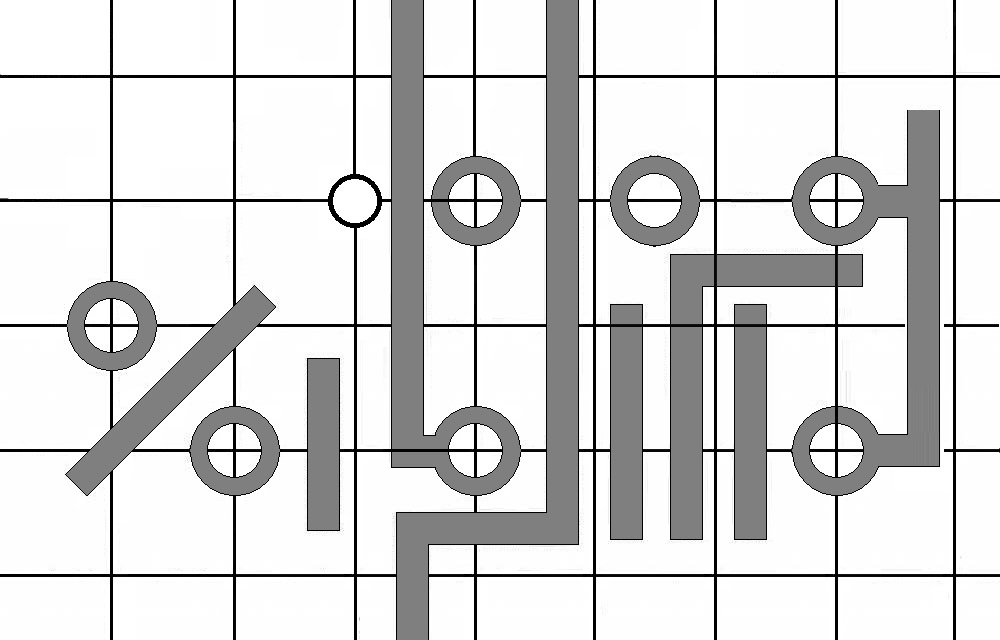
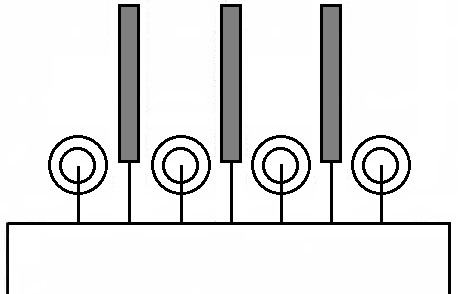
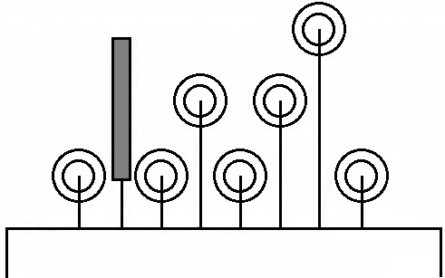

Проектирование печатных плат
Проектировать печатные платы наиболее удобно в масштабе 2:1 на миллиметровке или другом материале, на котором нанесена сетка с шагом 5 мм. При проектировании в масштабе 1:1 рисунок получается мелким, плохо читаемым и поэтому при дальнейшей работе над печатной платой неизбежны ошибки. Масштаб 4:1 приводит к большим размерам чертежа и неудобству в работе.
Все отверстия под выводы деталей в печатной плате целесообразно размещать в узлах сетки, что соответствует шагу 2,5 мм на реальной плате. С таким шагом расположены выводы у большинства микросхем в пластмассовом корпусе, у многих транзисторов и других радиокомпонентов. Меньшее расстояние между отверстиями следует выбирать лишь в тех случаях, когда это крайне необходимо.
В отверстия с шагом 2,5 мм, лежащие на сторонах квадрата 7,5×7,5 мм, удобно монтировать микросхему в круглом металлостеклянном корпусе. Для установки на плату микросхемы в пластмассовом корпусе с двумя рядами жестких выводов в плате необходимо просверлить два ряда отверстий. Шаг отверстий - 2,5 мм, расстояние между рядами кратно 2,5 мм. Vмикросхемы с жесткими выводами требуют большей точности разметки и сверления отверстий.
Если размеры печатной платы заданы, вначале необходимо начертить ее контур и крепежные отверстия. Вокруг отверстий выделяют запретную для проводников зону с радиусом, несколько превышающим половину диаметра металлических крепежных элементов.
Далее следует примерно расставить наиболее крупные детали - реле, переключатели (если их впаивают в печатную плату), разъемы, большие детали и т.д. Их размещение обычно связано с общей конструкцией устройства, определяемой размерами имеющегося корпуса или свободного места в нем. Часто, особенно при разработке портативных приборов, размеры корпуса определяют по результатам разводки печатной платы.
Цифровые микросхемы предварительно расставляют на плате рядами с межрядными промежутками 7,5 мм. Если микросхем не более пяти, все печатные проводники обычно удается разместить на одной стороне платы и обойтись небольшим числом проволочных перемычек, впаиваемых со стороны деталей. Попытки изготовить одностороннюю печатную плату для большего числа цифровых микросхем приводят к резкому увеличению трудоемкости разводки и чрезмерно большому числу перемычек. В этих случаях разумнее перейти к двусторонней печатной плате.
Cторону платы, где размещены печатные проводники, называют стороной проводников, а обратную - стороной деталей, даже если на ней вместе с деталями проложена часть проводников.
Микросхемы размещают так, чтобы все соединения на плате были возможно короче, а число перемычек было минимальным. В процессе разводки проводников взаимное размещение микросхем приходится менять не раз.
Рисунок печатных проводников аналоговых устройств любой сложности обычно удается развести на одной стороне платы. Аналоговые устройства, работающие со слабыми сигналами, и цифровые на быстродействующих микросхемах (например, серий КР531, КР1531, К500, КР1554) независимо от частоты их работы целесообразно собирать на платах с двусторонним фольгированием, причем фольга той стороны платы, где располагают детали, будет играть роль общего провода и экрана. Фольгу общего провода не следует использовать в качестве проводника для большого тока, например, от выпрямителя блока питания, от выходных ступеней, от динамической головки.
Далее можно начинать собственно разводку. Полезно заранее измерить и записать размеры мест, занимаемых используемыми элементами. Резисторы МЛТ-0,125 устанавливают рядом, соблюдая расстояние между их осями 2,5 мм, а между отверстиями под выводы одного резистора - 10 мм. Так же размечают места для чередующихся резисторов МЛТ-0,125 и МЛТ-0,25, либо двух резисторов МЛТ-0,25, если при монтаже слегка отогнуть один от другого (три таких резистора поставить вплотную к плате уже не удастся).
С такими же расстояниями между выводами и осями элементов устанавливают большинство малогабаритных диодов и конденсаторов КМ-5 и КМ-6, вплоть до КМ-66 емкостью 2,2 мкФ; не надо размещать бок о бок две "толстые" (более 2,5 мм) детали, их следует чередовать с "тонкими". Если необходимо, расстояние между контактными площадками той или иной детали увеличивают относительно необходимого.
В этой работе удобно использовать небольшую пластину-шаблон из стеклотекстолита или другого материала, в которой с шагом 2,5 мм насверлены рядами отверстия диаметром 1...1,1 мм, и на ней примерять возможное взаимное расположение элементов.
Если резисторы, диоды и другие детали с осевыми выводами располагать перпендикулярно печатной плате, можно существенно уменьшить ее площадь, однако рисунок печатных проводников усложнится.
При разводке следует учитывать ограничения в числе проводников, умещающихся между контактными площадками, предназначенными для подпайки выводов радиоэлементов.

Для большинства используемых в любительских конструкциях деталей диаметр отверстий под выводы равен 0,8-0,9 мм. Ограничения на число проводников для типичных вариантов расположения контактных площадок с отверстиями такого диаметра приведены на рис. 1 (сетка соответствует шагу 2,5 мм на плате).
Между контактными площадками отверстий с межцентровым расстоянием 2,5 мм провести проводник практически нельзя. Однако это можно сделать, если у одного или обоих отверстий такая площадка отсутствует (например, у неиспользуемых выводов микросхемы или у выводов любых деталей, припаиваемых на другой стороне платы). Такой вариант показан на рис. 1 посредине вверху.
Вполне возможна прокладка проводника между контактной площадкой, центр которой лежит в 2,5 мм от края платы, и этим краем (рис. 1 справа).
При использовании микросхем, у которых выводы расположены в плоскости корпуса (серии 133, К134 и др.), их можно смонтировать, предусмотрев для этого соответствующие фольговые контактные площадки с шагом 1,25 мм, однако это заметно затрудняет и разводку, и изготовление платы. Гораздо целесообразнее чередовать подпайку выводов микросхемы к прямоугольным площадкам со стороны деталей и к круглым площадкам через отверстия на противоположной стороне (рис. 2, ширина выводов микросхемы показана не в масштабе).

Подобные микросхемы, имеющие длинные выводы (например, серии 100), можно монтировать так же, как пластмассовые, изгибая выводы и пропуская их в отверстия платы. Контактные площадки в этом случае располагают в шахматном порядке (рис. 3).

При разработке двусторонней платы надо постараться, чтобы на стороне деталей осталось возможно меньшее число соединений. Это облегчит исправление возможных ошибок, налаживание устройства и, если необходимо, его модернизацию. Под корпусами микросхем проводят лишь общий провод и провод питания, но подключать их нужно только к выводам питания микросхем. Проводники к входам микросхем, подключаемым к цепи питания или общему проводу, прокладывают на стороне проводников, причем так, чтобы их можно было легко перерезать при налаживании или усовершенствовании устройства.
Если же устройство настолько сложно, что на стороне деталей приходится прокладывать и проводники сигнальных цепей, позаботьтесь о том, чтобы любой из них был доступен для подключения к нему и перерезания.
При разработке радиолюбительских двусторонних печатных плат нужно стремиться обойтись без специальных перемычек между сторонами платы, используя для этого контактные площадки соответствующих выводов монтируемых деталей; выводы в этих случаях пропаивают с обеих сторон платы. На сложных платах иногда удобно некоторые детали подпаивать непосредственно к печатным проводникам.
При использовании сплошного слоя фольги платы в роли общего провода отверстия под выводы, не подключаемые к этому проводу, следует раззенковать со стороны деталей.
Обычно узел, собранный на печатной плате, подключают к другим узлам устройства гибкими проводниками. Чтобы не испортить печатные проводники при многократных перепайках, желательно предусмотреть на плате в точках соединений контактные стойки (удобно использовать штыревые контакты диаметром 1 и 1,5 мм). Стойки вставляют в отверстия просверленные точно по диаметру и пропаивают. На двусторонней печатной плате контактные площадки для распайки каждой стойки должны быть на обеих сторонах.
Предварительную разводку проводников удобно выполнять мягким карандашом на листе гладкой бумаги. Сторону печатных проводников рисуют сплошными линиями, обратную сторону -штриховыми.
По окончании разводки и корректировки чертежа под него кладут копировальную бумагу красящим слоем вверх и красной или зеленой шариковой ручкой обводят контуры платы, а также проводники и отверстия,относящиесяк стороне деталей. В результате на обратной стороне листа получится рисунок проводников для стороны деталей.